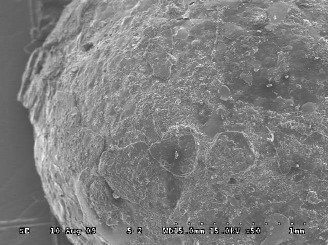

화재에 취약한 발포폴리스티렌(EPS)을 난연성능을 강화해 화재에 강한 단열재로 만들려는 시도는 오래전부터 있어 왔습니다. 경제성이 우수하고 가공성이 뛰어난 EPS의 장점때문이었죠.
난연성능을 증진시키려는 여러가지 연구중 EPS 입자에 코팅을 하는 방식이 가장 많았지만, 이 역시 쉬운 연구개발은 아니었습니다
보통 발포폴리스티렌(EPS)의 입자에 무기첨가물과 바인더를 혼합한 무기코팅층 형성시키는 기술이 어려웠던 이유는
▷입자를 단열재로 성형하는 과정에서의 불량률 증가
▷제조된 성형물의 내수성 불량으로 수분의 흡수, 입자들이 분리되는 현상의 발생
▷코팅에 사용되는 접착성분의 추가적인 부과로 인한 가연성물질이 증가되는 문제 등 때문이었습니다.
난연제는 성분에 따라
인계, 브롬계, 연소계와 같은 유기계 난연제와
수산화알루미늄, 수산화마그네슘, 안티몬 등의 무기계 난연제로 구분할 수 있고,
특히 난연제는 단순히 난연효과가 우수한것만을 넘어 저유해성, 저부식성 까지 겸비한 제품을 만드는데 연구가 집중되고 있습니다.
다음은 '무기코팅층이 형성된 고난연성 발포폴리스티렌의 제조' 의 실험연구 과정입니다.
EPS 발포 동 연구에 사용된 EPS는 폴리스티렌수지 93~95%(중량), 주발포제로 펜탄 5~6%(중량), 부탄 1%(중량), 난연제 HBCD 1%(중량)내외로 제조된 것 사용, 발포 |
▼
발포된 EPS를 45℃의 사이로에서 12시간 숙성
코팅 일명 스치로폴접착제로 알려진 고형분함량 45%의 점도 4000~4500cps '초산비닐수지 메틸알콜용액'을 베이스수지로 사용하고, 코팅제의 표면특성개선 및 난연성을 부여시키기 위해 수산화알루미늄을 첨가물로 첨가된 코팅제 사용 |
▼
교반후 60℃의 온풍으로 건조
보호코팅제 삽입 코팅된 EPS는 친수성의 물질로 가열성형과정에서 수막현상으로 기인한 융착불량의 문제를 억제시키기 위해 MDI (메틸렌 디페닐 디이소시아네이트 Methylene Diphenyl Diisocyanate)를 이용 |
▼
교반, 온풍건조
성형 |
※위 연구는 DK보드의 제품생산과는 전혀 무관한 <박영휘 : "무기코팅층이 형성된 고난연성 발포폴리스티렌 성형물의 제조기술개발",한국건자재시험연구원 (2010)>의 연구결과입니다.

코팅된 EPS 입자의 표면
준불연 가등급 EPS 단열재 DK보드
건축용 / 드라이비트용 / 판넬용
문의 1855-2240